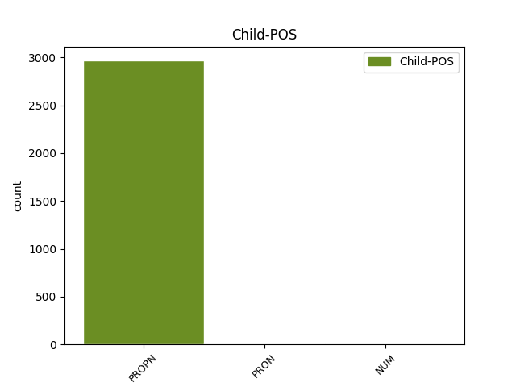

Distribution of features within this leaf

Agreement Rules sorted by frequency.
- When the dependent token is the flat multiword expression(flat@name) of the head token, and the head token is PROPN and the dependent token is PROPN.
1 Tekijät _ _ _ _ 0 _ _ _
2 ovat _ _ _ _ 0 _ _ _
3 autonomiseen _ _ _ _ 0 _ _ _
4 vasemmistoon _ _ _ _ 0 _ _ _
5 kuuluvia _ _ _ _ 0 _ _ _
6 henkilöitä _ _ _ _ 0 _ _ _
7 , _ _ _ _ 0 _ _ _
8 jotka _ _ _ _ 0 _ _ _
9 tavallisesti _ _ _ _ 0 _ _ _
10 esiintyvät _ _ _ _ 0 _ _ _
11 nimikkeiden _ _ _ _ 0 _ _ _
12 " _ _ _ _ 0 _ _ _
13 Antifascistisk _ _ _ _ 0 _ _ _
14 aktion _ _ _ _ 0 _ _ _
15 " _ _ _ _ 0 _ _ _
16 tai _ _ _ _ 0 _ _ _
17 " _ _ _ _ 0 _ _ _
18 Revolutionära Revolutionära PROPN N Case=Nom|Number=Sing 0 _ _ _
19 fronten fronten PROPN N Case=Nom|Number=Sing 18 flat@name _ SpaceAfter=No
20 " _ _ _ _ 0 _ _ _
21 alla _ _ _ _ 0 _ _ _
22 . _ _ _ _ 0 _ _ _
1 Tekijät _ _ _ _ 0 _ _ _
2 ovat _ _ _ _ 0 _ _ _
3 autonomiseen _ _ _ _ 0 _ _ _
4 vasemmistoon _ _ _ _ 0 _ _ _
5 kuuluvia _ _ _ _ 0 _ _ _
6 henkilöitä _ _ _ _ 0 _ _ _
7 , _ _ _ _ 0 _ _ _
8 jotka _ _ _ _ 0 _ _ _
9 tavallisesti _ _ _ _ 0 _ _ _
10 esiintyvät _ _ _ _ 0 _ _ _
11 nimikkeiden _ _ _ _ 0 _ _ _
12 " _ _ _ _ 0 _ _ _
13 Antifascistisk Antifascistisk PROPN N Case=Nom|Number=Sing 0 _ _ _
14 aktion _ _ _ _ 0 _ _ _
15 " _ _ _ _ 0 _ _ _
16 tai _ _ _ _ 0 _ _ _
17 " _ _ _ _ 0 _ _ _
18 Revolutionära Revolutionära PROPN N Case=Nom|Number=Sing 13 conj _ _
19 fronten _ _ _ _ 0 _ _ _
20 " _ _ _ _ 0 _ _ _
21 alla _ _ _ _ 0 _ _ _
22 . _ _ _ _ 0 _ _ _
1 eDonkey eDonkey PROPN N Case=Nom|Number=Sing 0 _ _ _
2 ( _ _ _ _ 0 _ _ _
3 ed2k ed2k PROPN N Case=Nom|Number=Sing 1 appos _ SpaceAfter=No
4 ) _ _ _ _ 0 _ _ _
5 on _ _ _ _ 0 _ _ _
6 edelleen _ _ _ _ 0 _ _ _
7 yllättävän _ _ _ _ 0 _ _ _
8 vahva _ _ _ _ 0 _ _ _
9 , _ _ _ _ 0 _ _ _
10 erityisesti _ _ _ _ 0 _ _ _
11 Etelä-Euroopassa _ _ _ _ 0 _ _ _
12 , _ _ _ _ 0 _ _ _
13 Saksassa _ _ _ _ 0 _ _ _
14 ja _ _ _ _ 0 _ _ _
15 Lähi-idässä _ _ _ _ 0 _ _ _
16 . _ _ _ _ 0 _ _ _
1 Ruotsin Ruotsi PROPN N Case=Gen|Number=Sing 2 mod@poss _ _
2 Storsjön Storsjö PROPN N Case=Gen|Number=Sing 0 _ _ _
3 hirviö _ _ _ _ 0 _ _ _
4 on _ _ _ _ 0 _ _ _
5 saatu _ _ _ _ 0 _ _ _
6 tallennettua _ _ _ _ 0 _ _ _
7 filmille _ _ _ _ 0 _ _ _
8 väittävät _ _ _ _ 0 _ _ _
9 paikalliset _ _ _ _ 0 _ _ _
10 hirviöharrastajat _ _ _ _ 0 _ _ _
11 . _ _ _ _ 0 _ _ _
1 GTS GTS PROPN N Case=Nom|Number=Sing 2 compound@nn _ _
2 Finnjet Finnjet PROPN N Case=Nom|Number=Sing 0 _ _ _
3 lähestyy _ _ _ _ 0 _ _ _
4 Helsinkiä _ _ _ _ 0 _ _ _
5 keväällä _ _ _ _ 0 _ _ _
6 2004 _ _ _ _ 0 _ _ _
7 . _ _ _ _ 0 _ _ _
1 Hiljalleen _ _ _ _ 0 _ _ _
2 etenimme _ _ _ _ 0 _ _ _
3 , _ _ _ _ 0 _ _ _
4 Molla Molla PROPN N Case=Nom|Number=Sing 0 _ _ _
5 ja _ _ _ _ 0 _ _ _
6 minä minä PRON Pron Case=Nom|Number=Sing|Person=1|PronType=Prs 4 conj _ SpaceAfter=No
7 , _ _ _ _ 0 _ _ _
8 Jussikin _ _ _ _ 0 _ _ _
9 tuli _ _ _ _ 0 _ _ _
10 jo _ _ _ _ 0 _ _ _
11 vastaan _ _ _ _ 0 _ _ _
12 mutaisien _ _ _ _ 0 _ _ _
13 käsien _ _ _ _ 0 _ _ _
14 kanssa _ _ _ _ 0 _ _ _
15 , _ _ _ _ 0 _ _ _
16 ketjut _ _ _ _ 0 _ _ _
17 jotenkuten _ _ _ _ 0 _ _ _
18 paikallaan _ _ _ _ 0 _ _ _
19 . _ _ _ _ 0 _ _ _
1 Nuhruisessa _ _ _ _ 0 _ _ _
2 lähikaupan _ _ _ _ 0 _ _ _
3 ekokassissa _ _ _ _ 0 _ _ _
4 on _ _ _ _ 0 _ _ _
5 hetken _ _ _ _ 0 _ _ _
6 mielijohteesta _ _ _ _ 0 _ _ _
7 hankittu _ _ _ _ 0 _ _ _
8 kahdeksan _ _ _ _ 0 _ _ _
9 euron _ _ _ _ 0 _ _ _
10 viinipullo _ _ _ _ 0 _ _ _
11 ja _ _ _ _ 0 _ _ _
12 aski _ _ _ _ 0 _ _ _
13 vihreää _ _ _ _ 0 _ _ _
14 Barclayta Barclay PROPN N Case=Par|Number=Sing 0 _ _ _
15 , _ _ _ _ 0 _ _ _
16 muotoilluilla _ _ _ _ 0 _ _ _
17 filttereillä _ _ _ _ 0 _ _ _
18 , _ _ _ _ 0 _ _ _
19 samoja sama PRON Pron Case=Par|Number=Plur|PronType=Ind 14 appos _ SpaceAfter=No
20 , _ _ _ _ 0 _ _ _
21 joita _ _ _ _ 0 _ _ _
22 hänellä _ _ _ _ 0 _ _ _
23 oli _ _ _ _ 0 _ _ _
24 tapana _ _ _ _ 0 _ _ _
25 polttaa _ _ _ _ 0 _ _ _
26 . _ _ _ _ 0 _ _ _
1 Näytteilleasettajien _ _ _ _ 0 _ _ _
2 joukossa _ _ _ _ 0 _ _ _
3 olivat _ _ _ _ 0 _ _ _
4 yrityksistä _ _ _ _ 0 _ _ _
5 mm. _ _ _ _ 0 _ _ _
6 Suomen _ _ _ _ 0 _ _ _
7 opensource-keskus _ _ _ _ 0 _ _ _
8 COSS _ _ _ _ 0 _ _ _
9 , _ _ _ _ 0 _ _ _
10 IT-mill _ _ _ _ 0 _ _ _
11 , _ _ _ _ 0 _ _ _
12 Globate _ _ _ _ 0 _ _ _
13 ja _ _ _ _ 0 _ _ _
14 yhdistyksistä _ _ _ _ 0 _ _ _
15 sekä _ _ _ _ 0 _ _ _
16 yhteisöistä _ _ _ _ 0 _ _ _
17 Effi _ _ _ _ 0 _ _ _
18 ry. _ _ _ _ 0 _ _ _
19 , _ _ _ _ 0 _ _ _
20 Ubuntu _ _ _ _ 0 _ _ _
21 Suomi _ _ _ _ 0 _ _ _
22 ja _ _ _ _ 0 _ _ _
23 OpenOffi OpenOffi PROPN N Case=Gen|Number=Sing|Typo=Yes 0 _ _ _
24 cen ce PROPN N Case=Gen|Number=Sing|Typo=Yes 23 goeswith _ _
25 Suomen _ _ _ _ 0 _ _ _
26 lokalisaatiotiimi _ _ _ _ 0 _ _ _
27 . _ _ _ _ 0 _ _ _
Disagree Examples:
1 Varsinkin _ _ _ _ 0 _ _ _
2 Salla Salla PROPN N Case=Nom|Number=Sing 0 _ _ _
3 Närän Närä PROPN N Case=Gen|Number=Sing 2 flat@name _ _
4 esittämä _ _ _ _ 0 _ _ _
5 pornokaupan _ _ _ _ 0 _ _ _
6 paha _ _ _ _ 0 _ _ _
7 puuma _ _ _ _ 0 _ _ _
8 sekä _ _ _ _ 0 _ _ _
9 Tarja _ _ _ _ 0 _ _ _
10 Vuolan _ _ _ _ 0 _ _ _
11 elämäpakoinen _ _ _ _ 0 _ _ _
12 leskirouva _ _ _ _ 0 _ _ _
13 lunastivat _ _ _ _ 0 _ _ _
14 paikkansa _ _ _ _ 0 _ _ _
15 . _ _ _ _ 0 _ _ _
1 Varsinkin _ _ _ _ 0 _ _ _
2 Salla _ _ _ _ 0 _ _ _
3 Närän _ _ _ _ 0 _ _ _
4 esittämä _ _ _ _ 0 _ _ _
5 pornokaupan _ _ _ _ 0 _ _ _
6 paha _ _ _ _ 0 _ _ _
7 puuma _ _ _ _ 0 _ _ _
8 sekä _ _ _ _ 0 _ _ _
9 Tarja Tarja PROPN N Case=Nom|Number=Sing 0 _ _ _
10 Vuolan Vuola PROPN N Case=Gen|Number=Sing 9 flat@name _ _
11 elämäpakoinen _ _ _ _ 0 _ _ _
12 leskirouva _ _ _ _ 0 _ _ _
13 lunastivat _ _ _ _ 0 _ _ _
14 paikkansa _ _ _ _ 0 _ _ _
15 . _ _ _ _ 0 _ _ _
1 Lisäksi _ _ _ _ 0 _ _ _
2 viihdymme _ _ _ _ 0 _ _ _
3 täällä _ _ _ _ 0 _ _ _
4 Port Port PROPN N Case=Nom|Number=Sing 0 _ _ _
5 Arthurin Arthur PROPN N Case=Gen|Number=Sing 4 flat@name _ _
6 puisissa _ _ _ _ 0 _ _ _
7 työväenasunnoissa _ _ _ _ 0 _ _ _
8 . _ _ _ _ 0 _ _ _
1 Lisäksi _ _ _ _ 0 _ _ _
2 pienen _ _ _ _ 0 _ _ _
3 vastaanhangoittelun _ _ _ _ 0 _ _ _
4 jälkeen _ _ _ _ 0 _ _ _
5 pupu _ _ _ _ 0 _ _ _
6 suostui _ _ _ _ 0 _ _ _
7 jatkamaan _ _ _ _ 0 _ _ _
8 iltaa _ _ _ _ 0 _ _ _
9 Suxessiin Suxess PROPN N Case=Ill|Number=Sing 0 _ _ _
10 ja _ _ _ _ 0 _ _ _
11 kenties _ _ _ _ 0 _ _ _
12 jopa _ _ _ _ 0 _ _ _
13 Klubillekin Klubi PROPN N Case=All|Clitic=Kin|Number=Sing 9 conj _ SpaceAfter=No
14 . _ _ _ _ 0 _ _ _
1 Tuotteista _ _ _ _ 0 _ _ _
2 voit _ _ _ _ 0 _ _ _
3 lukea _ _ _ _ 0 _ _ _
4 lisää _ _ _ _ 0 _ _ _
5 ja _ _ _ _ 0 _ _ _
6 niistä _ _ _ _ 0 _ _ _
7 voi _ _ _ _ 0 _ _ _
8 tilata _ _ _ _ 0 _ _ _
9 Ethnic Ethnic PROPN N Case=Nom|Number=Sing 0 _ _ _
10 Cosmeticsin Cosmetics PROPN N Case=Gen|Number=Sing 9 flat@name _ _
11 kotisivulta _ _ _ _ 0 _ _ _
12 . _ _ _ _ 0 _ _ _
13 :) _ _ _ _ 0 _ _ _